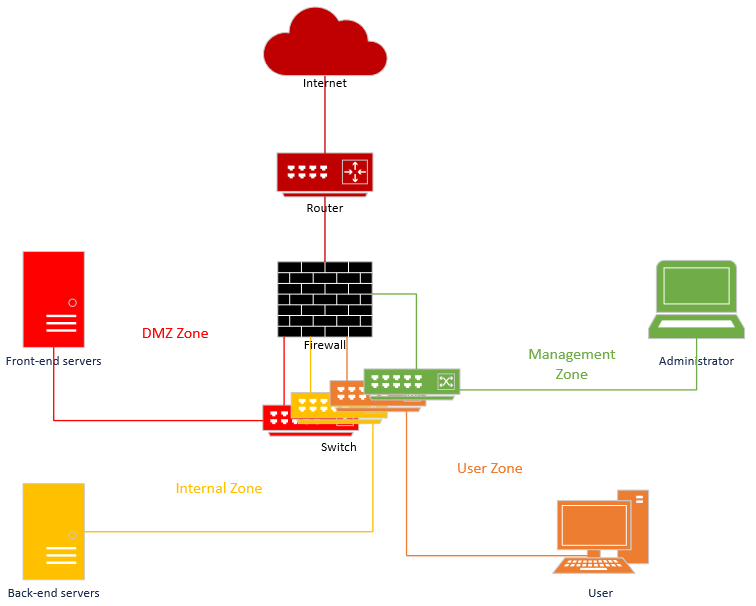

NIS2: Êtes vous dans le champ d'application ?
La nouvelle loi belge sur la cybersécurité est entrée en vigueur.

De nos jours, il est inutile de rappeler que la cybersécurité est un rouage essentiel au fonctionnement de toutes les entreprises, institutions publiques et même pour les particuliers.
De nombreux composants et outils peuvent et doivent être mis en place pour sécuriser votre environnement au sens large. Cela inclut non seulement les composants du réseau, comme les serveurs et les routeurs, mais aussi les ordinateurs des utilisateurs finaux, ainsi que les données des employés et des clients, quel que soit le lieu où elles sont hébergées.
Ce document se veut une introduction à tous vos efforts futurs en vue de sécuriser votre environnement, en portant avant tout votre attention sur le réseau proprement dit. Quelles technologies utiliser, quelle architecture mettre en place et comment les sécuriser au mieux ? Voici les questions auxquelles nous allons répondre.
Pour constituer un réseau sécurisé, nous devons utiliser différents composants, chacun ayant un objectif spécifique en termes de sécurité. Par souci de lisibilité, nous regroupons ces composants en deux catégories : le filtrage du contenu et la surveillance du trafic.
La première catégorie, le filtrage du contenu, rassemble les éléments qui ont des actions actives sur le réseau et peuvent manipuler le trafic (autoriser, refuser, modifier, etc.). Il s'agit des éléments suivants :
La seconde catégorie, la surveillance du trafic, regroupe les éléments qui se limitent à surveiller le réseau et ne modifient dès lors pas le trafic. C'est principalement le cas des systèmes de détection d'intrusion («Intrusion Detection Systems», IDS).
Tous ces éléments doivent respecter certaines bonnes pratiques pour atteindre leurs objectifs et doivent être imbriqués correctement.
Il existe trois principaux types de firewalls : « stateless », « stateful » et « next-generation ».
Les firewalls « stateless » et « stateful » inspectent tous deux les headers des paquets avant de prendre une décision ; dès lors, ils examinent uniquement l’adresse IP et le port, la source et la destination. En outre, le firewall « statefull » stocke des informations concernant les connexions actives. Lorsqu'une connexion est ouverte, le firewall recherche et met à jour son enregistrement d'état interne à mesure que de nouveaux paquets sont inspectés. Cela lui permet de détecter des anomalies. Par exemple, une réponse DNS sans demande correspondante.
C'est pourquoi nous recommandons toujours d’utiliser un firewall « stateful » et non un « stateless ».
En revanche, un Next-Generation Firewall (NGFW) peut inspecter la totalité des paquets. Les capacités de traitement et donc le prix sont bien sûr plus élevés. Mais il s'agit de la meilleure technologie firewall actuellement disponible sur le marché.
En règle générale, nous entendons réduire autant que possible la surface d'attaque de nos systèmes, et tout ce qui reste accessible doit être étroitement contrôlé.
Nous nous concentrerons tout d'abord sur la configuration et la maintenance du firewall proprement dit. À ce titre, nous devons insister sur l'utilisation de comptes nominatifs, idéalement authentifiés à l’aide d’un directory service grâce au protocole LDAP, avec une authentification multi-facteurs et un certificat valide pour une bonne sécurité.
Apprenez-en plus en lisant notre papier à propos du Multi-Factor Authentication : https://www.cert.be/fr/paper/mieux-proteger-les-comptes-grace-lauthentification-multifacteur
Le compte de service utilisé pour interroger l'active directory doit avoir le moins d’accès possible.
Tous les comptes nominatifs doivent respecter le principe du « moins d’accès possible ». À titre d’exemple, un analyste doit seulement avoir un accès en mode lecture, alors qu'un administrateur peut avoir un accès en mode lecture et écriture. Idéalement, ces paramètres doivent être configurés à l’aide de groupes de rôles dans le directory service pour éviter d'avoir différents droits de configuration. Les informations d'identification de l'administrateur local doivent être conservées en lieu sûr et ne jamais être utilisées, à moins qu'il n'y ait pas d'autre solution.
La liste des comptes ayant accès au firewall doit être mise à jour au fil des arrivées et départs de collaborateurs, ainsi que des changements de fonction. Cette liste doit être revue au moins une fois par an.
En termes de configuration du réseau, il faut absolument consacrer une interface physique du firewall à l'accès de l’administration dans le VLAN de l’administration. Il faut veiller à désactiver les interfaces réseau qui ne sont pas utilisées, toujours dans l’idée de réduire la surface d'attaque. Il
est également important que le firewall dispose de routes statiques pour tous les réseaux internes qui ne sont pas directement connectés au firewall, afin d'éviter toute usurpation du DNS et d'éventuelles attaques par spoofing.
Lorsque vous configurez votre politique de filtrage, nous vous recommandons d'utiliser des règles explicites. Cela signifie que vous devez écrire tout ce que vous voulez faire, dans un ordre logique, sans tenir compte de règles implicites qui pourraient être intégrées dans le firewall. En outre, cette méthode facilite la compréhension et l’application des règles pour vous et les futurs administrateurs. Elle permet aussi d'affiner plus facilement les paramètres spécifiques d'une règle, par exemple choisir de ne pas enregistrer un trafic bruyant bien connu.
Appliquez aussi le principe du « least privilege » : ouvrez seulement les ports nécessaires au bon fonctionnement du business et des travailleurs, mais sans plus. Ne refusez pas non plus catégoriquement d’ouvrir tout nouveau port, mais agissez plutôt en « bon père de famille ».
Tout ce que la politique de filtrage n’autorise pas explicitement doit également être explicitement bloqué. C'est pourquoi, à la fin de votre configuration, vous devez absolument définir une règle finale de blocage et d’enregistrement.
Afin d'examiner de plus près l'ordre logique des règles, qui les rend plus efficaces, plus faciles à lire et à appliquer, nous les diviserons en trois types :
Voici, un exemple d’aperçu succinct de ce à quoi cela doit ressembler :
Source | Destination | Destination service | Action |
Allowed flows to the firewall | |||
[ADMIN_NET] | admin_interface | HTTPS | Allow + log |
[DISTANT_OFFICE] | external_interface | IPSEC | Allow + log |
Allowed flows from the firewall | |||
internal_interface | [UPDATE_SERVERS] | HTTPS | Allow + log |
external_interface | [DISTANT_OFFICE] | IPSEC | Allow + log |
Firewall protection | |||
any | [ALL_INTERFACES] | any | Block + log |
Allowed business traffic | |||
proxy | internet | HTTPS | Allow + log |
[USERS_NET] | [ADDS_SERVERS] | AD | Allow + log |
[MAIL_SERVERS] | internet | SMTP | Allow + log |
Noise rules | |||
[USERS_NET] | users_net_broadcast | SMB_BROADCASTS | Block |
Final block | |||
any | any | any | Block + log |
Nous voulons garder le contrôle des connexions Internet sortantes pour détecter le trafic « Command & Control (C2) » ou les canaux cachés et bloquer l'accès aux malwares ou aux sites Internet malveillants. C’est le rôle du proxy.
Le proxy doit disposer de capacités suffisantes pour décrypter et analyser le trafic. À cette fin, le serveur proxy agit en tant que passerelle entre l'utilisateur et le serveur de destination, traitant toutes les demandes et réponses au nom de l'utilisateur. Cette position permet au proxy de lire le contenu de chaque connexion et d'appliquer le filtrage souhaité.
Le proxy doit également assurer une connexion sécurisée entre lui et les autres acteurs impliqués. Il utilise idéalement TLS 1.3, tout en veillant à ne jamais autoriser la rétrogradation des méthodes de cryptage. Cela signifie que nous voulons utiliser des proxies explicites plutôt que des proxies « bump-in-the-wire » (ou transparents), qui ne fonctionnent plus efficacement avec le trafic crypté.
En outre, le proxy doit disposer de toutes les capacités modernes d'analyse des protocoles : HTTPv3, QUIC, DoT, DoH, DoQ, media streaming, etc.
Nous voulons être en mesure de capter la télémesure du réseau pour identifier les anomalies (très utile pour la détection d’exfiltrations), et les captures du réseau (PCAP) pour rechercher les menaces ultérieurement. L'enregistrement du « HTTP header » est également intéressant pour identifier les fuites de données. Ce n'est pas l'objet du présent document, mais si vous souhaitez obtenir davantage d'informations ou connaître les méthodes de mise en œuvre, vous pouvez consulter l'article suivant : https://cqr.company/web-vulnerabilities/information-leakage-via-http-headers/.
Cette fonction détermine la manière dont les appareils des utilisateurs sont validés lorsqu'ils accèdent à Internet. L'authentification par proxy doit être activée pour pouvoir créer de nouvelles règles pour les utilisateurs ou les groupes.
Il existe deux méthodes d’identification d’un utilisateur : à l’aide de l'adresse IP de son appareil ou d’un nom d'utilisateur et un mot de passe. Si la deuxième option est clairement la meilleure, elle ne pourra être appliquée à chaque composant de votre réseau, comme les serveurs. Nous établirons alors une liste d'hôtes sources et de destinations autorisés en fonction des besoins techniques (mise à jour des serveurs). En effet, pour les cyberpirates, l’accès des serveurs à Internet est le moyen le plus facile pour exfiltrer des données. Tout accès non authentifié ou non autorisé doit être bloqué.
Grâce à l'authentification des utilisateurs, le proxy doit être en mesure de détecter les administrateurs locaux ou de domaine, les comptes autorisés ou les comptes de service et ainsi de bloquer leur accès à Internet.
Dans le cas d'un proxy explicite, nous utilisons généralement un fichier Proxy Auto-Configuration (PAC) ou Web Proxy Auto-Discovery (WPAD) qui décrit à l'hôte client comment il doit accéder aux ressources en fonction de son URL, de son nom d'hôte ou de son IP. Ce fichier doit être stocké de manière à ce que les utilisateurs (non externes) puissent y accéder facilement et rapidement ; seuls les utilisateurs autorisés appropriés peuvent le modifier. Ce fichier permet aussi de configurer certaines connexions en contournant le proxy (DIRECT), mais les risques que cela comporte doivent être soigneusement pris en compte.
En termes de politique, le proxy doit être configuré pour :
Si l'on veut réduire les risques qu'un appareil malveillant soit physiquement connecté au réseau, une solution est d’implémenter un Network Access Control (NAC). Il permet en effet de vérifier les niveaux d'autorisation et d'accès de chaque appareil ou utilisateur avant qu'il ne se connecte au réseau. L'appareil ou l'utilisateur qui se connecte est d'abord placé dans un VLAN distinct et, si l'authentification et l'autorisation sont validées, il est alors connecté au réseau principal.
Bien que la mise en œuvre de ces solutions n’est pas l’objet du présent document, voici néanmoins quelques recommandations de base :
Un NAC peut authentifier l'utilisateur, tout en validant la configuration de sécurité de l'hôte client pour voir si elle satisfait aux politiques de sécurité. Par exemple, un antivirus à jour, etc.
Les VPN sont utilisés pour connecter par Internet des hôtes ou des réseaux séparés, le tout de manière sécurisée et confidentielle.
Il existe de nombreux types de VPN, nous nous concentrerons ici sur les deux principaux, à savoir les solutions VPN IPsec et SSL. La principale différence se situe au niveau du protocole : IPSec est intégré dans TCP/IP, tandis que SSL/TLS est une couche supplémentaire à TCP/IP.
Quelle que soit la technologie VPN choisie, il est primordial de respecter les mesures de sécurité d’usage en fonction de ce qui est disponible : authentification appropriée, contrôle d'accès approprié et logging appropriée. Ces mesures ne sont pas l’objet du présent document et seront abordées dans d'autres publications.
Les VPN IPsec sont composés de trois protocoles principaux : Internet Key Exchange (IKE), Authentication Header (AH) et Encapsulating Security Payload (ESP).
Si vous utilisez un concentrateur VPN, nous vous recommandons d'activer Dead Peer Detection (DPD). Il s'agit d'un mécanisme qui permet aux deux parties d'un tunnel IPsec de détecter si l'autre partie n'est plus joignable et de supprimer l'association de sécurité IKE.
Pour aller plus loin, il est possible de disposer d'une référence actualisée et de pointe pour tout ce qui concerne les mécanismes de cryptage dans le NIST Special Publication 800-77.
Les SSL VPN fonctionnent en grande partie de la même manière que les autres technologies SSL/TLS, comme HTTPS. Concrètement, cela signifie que le tunnel est établi en quatre étapes, à savoir la poignée de main initiale, l'authentification du serveur, la négociation du chiffrement et l'échange de clés. Les données sont ensuite acheminées dans le tunnel créé pour les terminaux ou les réseaux pour lesquels il a été configuré, avec les mécanismes de cryptage et les clés qui ont été négociés.
Comme il s'agit d'une norme très répandue, la mise en œuvre et la maintenance de ces tunnels sont très faciles.
Cependant, n'oubliez pas de choisir un certificat de taille raisonnable (RSA 2048 bits pour un certificat Let's Encrypt est plus que suffisant). Ce merveilleux outil de la Fondation Mozilla devrait vous être d'une grande aide : https://ssl-config.mozilla.org/
Il vous évite de faire des erreurs lorsque vous avez besoin d'une configuration SSL pour un service que vous ne connaissez pas très bien.
Voici les recommandations minimales habituelles pour utiliser des algorithmes de cryptage dans les SSL VPN au moment de la publication :
Setting | Recommendation |
Cipher | AES-GCM, AES-CTR, AES-CBC, AES-CCM (128, 192, 256-bit keys) |
Handshake | RSA, DSA, ECDSA with 128-bit security strength : minimum RSA or DSA with 3072-bit key or ECDSA with 256-bit key |
Hash authentication | HMAC-SHA256, HMAC-SHA384, HMAC-SHA512 |
Perfect Forward Secrecy (PFS) | DH14 to DH21 |
Source: ANSSI - Agence Nationale de la Sécurité des Systèmes d’Information. (2020, January 1). Guide des mécanismes cryptographiques. ANSSI. https://www.ssi.gouv.fr/uploads/2021/03/anssi-guide-mecanismes_crypto-2.04.pdf
Les IDS (Intrusion Detection Solution) et les IPS (Intrusion Protection Solution) sont des solutions qui permettent de détecter et éventuellement de bloquer toute menace sur le réseau. Vous trouverez plus de détails dans l'un de nos prochains articles.
Les WAF (Web Application Firewalls) sont des dispositifs placés devant un serveur Internet qui protègent les services Internet contre les attaques au niveau applicatif. Cette technologie sera abordée dans un autre article.
Pour segmenter le réseau, nous utilisons le concept de VLAN (Virtual Local Area Network). Cette technologie nous permet de créer différents réseaux virtuels distincts au sein d'un routeur ou d'un switch de niveau 3, sans avoir à supporter les coûts et la complexité d’avoir des réseaux physiquement séparés.
Le principal risque lié à l'utilisation de VLAN au lieu d'une segmentation physique réside dans les attaques de type « VLAN-hopping », dans lesquelles un cyberpirate pourrait abuser d'un mécanisme pour « sauter » (« hop ») d'un VLAN moins sensible à un VLAN plus sensible, en contournant ainsi les mesures de sécurité destinées à protéger le VLAN sensible. Il est possible de se prémunir contre ce type d'attaque avec un minimum de préparation ; les bénéfices des VLAN sont donc bien supérieurs à ce désagrément.
Nous pouvons réduire les risques en suivant quelques recommandations, que nous décrirons dans le chapitre suivant « Configuration des périphériques de réseau ».
Nous décrirons également comment exploiter les VLAN pour créer un réseau complet dans le chapitre « Sécurité traditionnelle des réseaux ».
Bien que les dispositifs de réseau ne soient pas des dispositifs de sécurité et ne doivent pas être considérés comme tels, ils sont très centraux et les cyberpirates peuvent facilement les exploiter. Il faut dès lors particulièrement veiller à la configuration de leur sécurisation.
Il existe donc un ensemble de mesures visant à renforcer la configuration qu’il est possible de mettre en œuvre pour les routeurs et les switches :
Pour élaborer un réseau complet et sécurisé à l'aide des composants décrits ci-dessus, nous utiliserons le concept de segmentation de la sécurité. Ce concept requiert de réaliser une analyse des risques minimums concernant l'infrastructure que nous voulons mettre en place.
La base de cette analyse des risques est la suivante :
Sur cette base, nous pouvons créer les zones de sécurité suivantes :
Nous voulons ensuite séparer virtuellement ou physiquement toutes ces zones. Voici un exemple d'une telle architecture :

Dans ce cas, nous utilisons un seul firewall pour tous les VLAN et un seul switch avec un VLAN pour chaque zone. Dans un scénario plus coûteux et légèrement plus complexe, voici ce que nous pourrions avoir :

Ici, nous utilisons deux firewalls, qui pourraient provenir de deux fournisseurs différents, afin de réduire le risque d'un jour zéro affectant un fournisseur. Mais le risque est que les connaissances/compétences soient diluées et qu'au lieu d'avoir un seul dispositif bien configuré, l'entreprise ait un dispositif bien configuré et un dispositif moins bien configuré. Ce dernier pourrait alors devenir une cible beaucoup plus facile et avoir l'effet inverse de celui escompté. Il faut donc choisir avec soin.
Nous utilisons également une DMZ séparée physiquement pour réduire les risques d'un jour zéro sur le switch, ainsi que le risque de « VLAN hopping ».
Ces exemples montrent que le nombre de zones de sécurité et de dispositifs peut varier considérablement. C'est pourquoi il est primordial de procéder à une analyse des risques pour construire une infrastructure cohérente.
« Zero Trust » est un concept utilisé pour créer une infrastructure très sécurisée dans laquelle nous allons plus loin que l'architecture traditionnelle vue précédemment.
Comme son nom l'indique, cette architecture ne repose pas sur une confiance implicite basée simplement sur l'emplacement du réseau. Ainsi, tout utilisateur ou système qui tente d'accéder à des ressources devra s'authentifier avec un système d’identification fort, par exemple avec l'authentification multifacteurs (MFA), et l'accès sera accordé ou non en fonction d'une politique d'accès minimum.
Elle va également plus loin en termes de micro-segmentation, car les systèmes seront plus strictement séparés les uns des autres, avec des contrôles de protection et de surveillance à chaque étape.
Le ZTN n’est pas l’objet du présent document, mais la publication spéciale 800-207 du NIST donne une définition plus approfondie du « Zero Trust Network », et la publication spéciale 1800-35 du NIST explique en détail comment mettre en œuvre une ce type d’architecture.
Dans ce document, nous avons couvert un large éventail de technologies et de stratégies de sécurité de base. Même s'il s'agit d'un bon début, nous vous recommandons de toujours actualiser vos connaissances et vos compétences. Nos prochains articles se concentreront sur des aspects plus spécifiques, dans le but de vous aider à former votre cyberdéfense.
ANSSI - Agence Nationale de la Sécurité des Systèmes d’Information. (2013, March 30). Premier Ministre - Agence nationale de la Sécurité des Systèmes D... Recommandations pour la définition d’une politique de filtrage réseau d’un pare-feu. https://www.ssi.gouv.fr/uploads/IMG/pdf/NP_Politique_pare_feu_NoteTech.pdf
ANSSI - Agence Nationale de la Sécurité des Systèmes d’Information. (2020, January 1). Guide des mécanismes cryptographiques. ANSSI. https://www.ssi.gouv.fr/uploads/2021/03/anssi-guide-mecanismes_crypto-2.04.pdf
ANSSI - Agence Nationale de la Sécurité des Systèmes d’Information. (2021, April 2). Recommandations pour une configuration sécurisée d’un pare... RECOMMANDATIONS POUR UNE CONFIGURATION SÉCURISÉE D’UN PARE-FEU STORMSHIELD NETWORK SECURITY. https://www.ssi.gouv.fr/uploads/2017/12/anssi-guide-recommandations_configuration_securisee_pare_feu_stormshield_network_security_version_3.7.17.pdf
Australian Government. (2022, July 29). Gateway security guidance package: Gateway technology guides. Gateway Security Guidance Package: Gateway Technology Guides | Cyber.gov.au. http://www.cyber.gov.au/resources-business-and-government/maintaining-devices-and-systems/system-hardening-and-administration/gateway-secuirty-guidance/gateway-technology-guides
Bhardwaj, R., Ipwithease, & Rashmi BhardwajMore From This AuthorI am here to share my knowledge and experience in the field of networking with the goal being - "The more you share. (2022, December 22). Proxy vs PAC file: Detailed comparison. IP With Ease. https://ipwithease.com/proxy-vs-pac-file/
Cisco. (2022, August 31). VLAN best practices and security tips for Cisco Business Routers. Cisco. https://www.cisco.com/c/en/us/support/docs/smb/routers/cisco-rv-series-small-business-routers/1778-tz-VLAN-Best-Practices-and-Security-Tips-for-Cisco-Business-Routers.html
Crawford, W. by Douglas, Crawford, D., Carroll, L., Lorraine, (R)., Eng. T. H. 4000, Douglas Crawford replied to Eng. Tarek Herik 4000 (R)., Johnny, johnny, D. C. replied to, Foster, K., & Douglas Crawford replied to kristy foster. (2020, June 30). VPN encryption types: Openvpn, IKEV2, PPTP, L2TP/IpSec, SSTP. ProPrivacy.com. https://proprivacy.com/vpn/guides/vpn-encryption-the-complete-guide
Kozierok, C. M. (2005, September 20). IP Security (IPSec) Protocols. The TCP/IP guide - IP security (IPSec) protocols. http://www.tcpipguide.com/free/t_IPSecurityIPSecProtocols.html
Merchant, S. (2021, September 26). TLS 1.3 is moving forward: What you need to know today to get ready. Gigamon Blog. https://blog.gigamon.com/2018/05/10/tls-1-3-is-moving-forward-what-you-need-to-know-today-to-get-ready/
Michali, C. (2023, March 20). Stateful vs. stateless firewall. Check Point Software. http://www.checkpoint.com/cyber-hub/network-security/what-is-firewall/what-is-a-stateful-firewall/stateful_vs_stateless_firewall/#:~:text=Stateful%20and%20stateless%20firewalls%20largely,valid%20based%20on%20predefined%20rules
Network Access Control. Network Access Control - The Hacker Recipes. (n.d.). http://www.thehacker.recipes/physical/networking/network-access-control
NIST - National Institute of Standards and Technology. (n.d.). Guide to IPsec VPNS. National Institute of Standards and Technology. https://nvlpubs.nist.gov/nistpubs/SpecialPublications/NIST.SP.800-77r1.pdf
NSA - National Security Agency. (2022, June). Network Infrastructure Security Guide - U.S. Department of Defense. National Security Agency. https://media.defense.gov/2022/Jun/15/2003018261/-1/-1/0/CTR_NSA_NETWORK_INFRASTRUCTURE_SECURITY_GUIDE_20220615.PDF
Palic, J. (2022, November 23). Comparing IPsec vs. SSL VPNS. ONLC. http://www.onlc.com/blog/comparing-ipsec-vs-ssl-vpns/#:~:text=The%20main%20difference%20between%20IPsec,or%20application%20on%20the%20network
Speaker, M. C. (2023a, May 16). Full proxy. Technology Focused Hub. https://network-insight.net/2015/10/22/full-proxy/